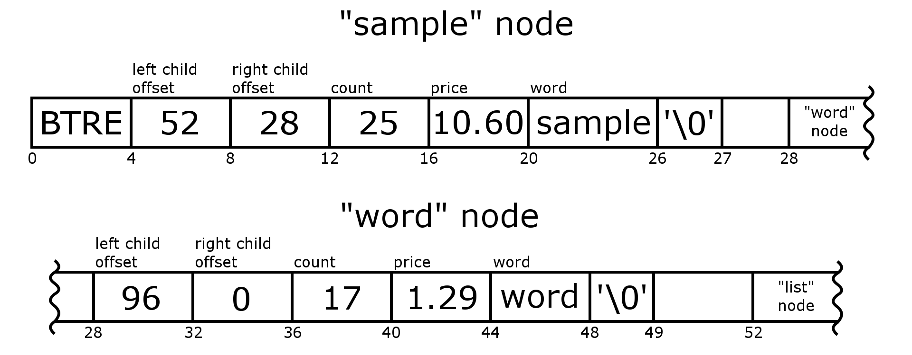

Learning Objectives
The learning objectives for Mad Mad Access Pattern are:
- Working with files
- mmap()
- fseek() and fread()
Mapping Inventory #
Here’s the BlueGrass Song (Description and Lyrics) introduction to this assignment.
You’ve landed an internship at Zing!, a search engine start-up. Your first project is to develop a keyword advertisement inventory tool.
Advertisers can “buy” keywords such that their ad is shown whenever a user does a search that contains one of their keywords. For example, if a user searches for “stapler”, they will see ads for an office supply company who bought that keyword.
Before buying a keyword, advertisers want to know, “How much will this cost me?” To compute that, they’ll need to know how often the keyword is searched for, and how valuable the word is. For example “how” is a very common word but has little value. “Donate” is less common but highly valuable, because a user searching for “donate” is probably willing to do so.
The intern before you scanned through a large volume of search logs to determine the frequency and value of each word. Your job is to perform efficient searches on the data file she created. This file is expected to grow to be very large, larger than will fit in memory, so you will need to access it without reading it all into memory.
Data File Structure #
The file is structured like a binary search tree, where each tree node is an instance of this structure:
typedef struct {
uint32_t left_child; // offset of node containing left child
uint32_t right_child; // offset of node containing right child
// Offsets are relative to the beginning of the file.
// An offset of zero means the child does not exist.
uint32_t count; // number of times the word occurs in the data set
float price; // price of the word
char word[0]; // contents of the word, null-terminated
} BinaryTreeNode;
The first 4 bytes of the input file are the letters “BTRE”. Any file which does not start with these 4 bytes is an invalid data file. The root node is stored at offset 4 in the file. Each uint32_t and float is stored in little-endian format (the same as the processors your VMs use, so no conversion will be necessary). “word” is an array of ASCII characters at the end of each structure, and it is a null-terminated string. There is no limit on the length of a word in the file or the length of the words your program will look up.
Remember the properties of a binary search tree: if a node has a left child, that child’s value is less than the node. If it has a right child, that child’s value is greater than the node.
Comparison among nodes in this assignment is defined by their word’s int strcmp(const char *s1, const char *s2). In other words:
BinaryTreeNode *node = ...a node from the file...
if (node->left_child) {
BinaryTreeNode *left = ...load node at node->left_child...
assert(strcmp(left->word, node->word) < 0);
}
if (node->right_child) {
BinaryTreeNode *right = ...load node at node->right_child...
assert(strcmp(right->word, node->word) > 0);
}

Note that none of the binary search trees we give you will have duplicate keys.
Files #
You’ll be given:
- tree.h - contains the struct definition above and a detailed description of the data in sample.data
- Makefile - the makefile you should use to build lookup1 and lookup2
- sample.data - a small file containing the words “sample”, “word”, “list”, “for”, “this”, and “program”
- utils.h - Printing functions for you to use
- input_file - Sample input to create_file executable.
- create_file - Creates binary tree structured data file corresponding to input_file. This will be used for your test cases.
- print_file - Prints out human readable form of binary tree structured file from above.
Make two versions of your program. Both should produce the same results, but using different file access methods.
Version 1: fseek / fread #
When reading a node from the file, use fseek() to jump to the correct position and read the node with fread() and/or fgetc(). You may not use mmap() for this part.
Put the code for this in lookup1.c.
Version 2: mmap #
Use mmap() to map the entire file into memory without reading any part of the file directly. When reading a node from the memory mapped file, use pointer arithmetic to jump to the correct position and read the node using regular pointer dereferencing.
Put the code for this in lookup2.c.
Notice that you can use only mmap() to map the WHOLE file for this version. Do not use other functions to read files.
Sample usage #
lookup1 <data_file> <keyword> [<keyword> ...]
lookup2 <data_file> <keyword> [<keyword> ...]
% ./lookup1 sample.data list sample werd
list: 12 at $0.04
sample: 25 at $10.60
werd not found
% ./lookup2 sample.data list sample werd
list: 12 at $0.04
sample: 25 at $10.60
werd not found
Testing notes #
- You are given reference files! Compare your outputs with ./lookup1-reference and ./lookup2-reference :)
- Write your test cases to include comparison of performance between the two versions (lookup1 and lookup2). Think about which one is faster and why.
- In order to generate different binary tree structured data files based on input required for each test case, use the
create_dataexecutable. Seeinput_filefor sample input to this executable. - The
print_fileexecutable will provide a human readable form of a binary tree structured data file generated fromcreate_data.
Error cases:
- If run with less than 2 arguments, your program should print an error message describing the arguments it expects and exit with error code 1.
- If the data file cannot be read or the first 4 bytes are not “BTRE”, print a helpful error message and exit with error code 2.
- If a call to
mmapfails (for version 2), print a helpful error message and exit with error code 3. - Helper functions for the above error cases can be found in
utils.h.
For each word that is found, print its count and its price, where the price is always printed with exactly two digits to the right of the decimal point.